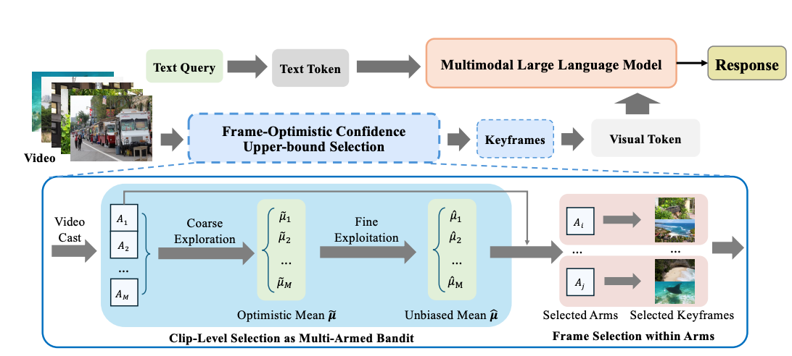

ICLR 2026
FOCUS: Efficient Keyframe Selection for Long Video Understanding
A two-stage exploration–exploitation framework for selecting informative frames from long videos. Processes less than 2% of frames while improving long-video understanding accuracy.
↑ 11.9% on long LongVideoBench videos · ~1.6% frames processed